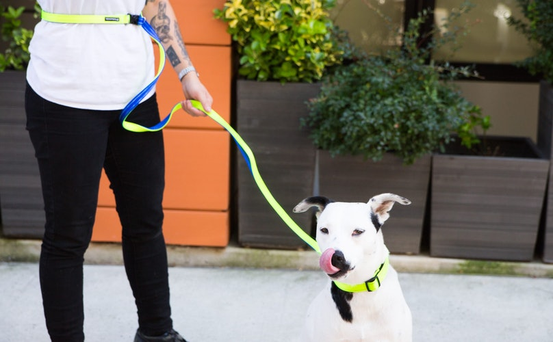

How Dogs React Differently
|
Your dog may respond to the walk in various ways. They may pull, be resistant to walking with you, jump, or dart out. It is important to keep a firm grip on the leash to be prepared,
and keep you and your dog safe. Make sure that you are only reinforcing the positive behaviors, and keeping the leash where you want it, so that the dog learns the limits of the leash,
and understands they are to follow your lead. Your best way of avoiding these negative behaviors is to ignore them, and only acknowledge the positive ones. If there is a common problem
area on walks in the beginning, avoid that area until the dog is further in the training process. Identifying these triggers will go a long way and lead to success.
|
 |
|---|